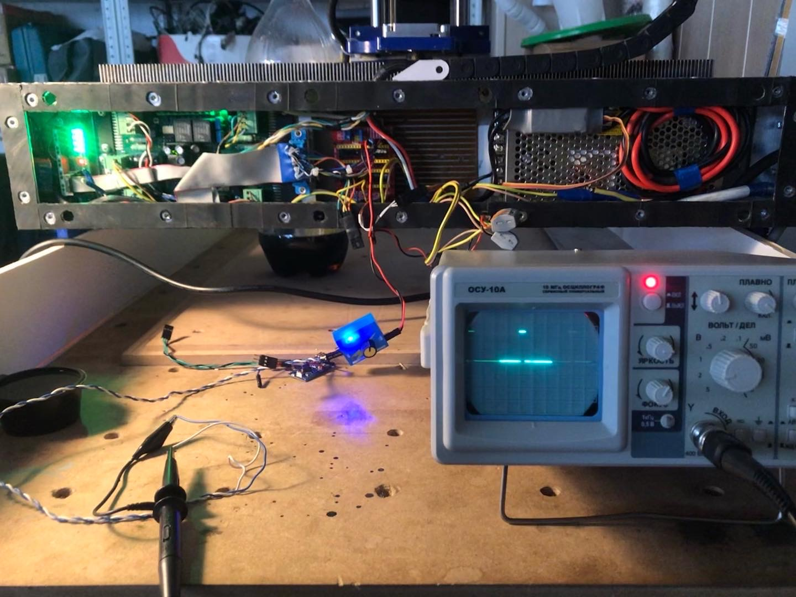

Programming, robotics, traveling
Grbl + ESC & Brushless motor
Навигация по проекту:
- Покупка и разбор фрезерного станка Cutmaster CM-1500
- Модернизация Cutmaster CM-1500
- Установка и настройка Grbl
- CNCjs + ESP-Link
- Grbl + ESC & Brushless motor
В чём проблема?
Прошивка Grbl позволяет управлять шпинделем или лазером с помощью ШИМ. При этом сигнал ШИМ имеет следующие параметры:
- период ≈850мс
- амплитуду 5В
- скважность от 0 до 100% процентов
- дискретность 256 значений, зависимость линейная

Тогда как все сервоприводы или ESC для бессколлекторных двигателей управляются с помощью ШИМ сигнала со следующими параметрами:
- период 20мс (частота 50Hz)
- длина положительного импульса варируется в среднем от 800-1000мкс до 2000мкс (точное значение мб калибровно, для этого практически все ESC содержат функцию калибровки рабочего диапазона)
- амплитуда 5В
Соответственно нет возможности управлять драйвером бессколлекторного двигателя из Grbl напрямую.
Подробнее о этой проблеме написано в grbl/issues/1049.
Определение длины положительного импульса
Тк мне не удалось завести на своём ESC алгоритм калибровки стандартным способ (включением газа на максимум при подаче питания), я воспользовался сервотестором и на осцилографе рассчитал ширину положительного сигнала для меня она составила диапазон от 900 до 2000мкс.

Решение
На Github достаточно легко ищутся решения.

Все решения можно разделить на 2 типа:
- Добавление функционала нового ШИМ в прошивку Grbl
- Добавление дополнительного микроконтроллера для перекодирования сигнала
К сожалению рабочей реализации первого решения мне найти не удалось. Второй вариант, выглядел намного проще. Я собрал небольшой сетап на базе Arduini Pro Micro.
Кодовую базу решил не писать с нуля, а взять в основу пару готовых проектов:
- https://github.com/empirephoenix/grbl-esc-brushless-converter
- https://github.com/kirilnedev/grbl-rc-pwm
Первое решение мне не нравилось из-за излишней мешуры в виде использования светодиода и не совсем изящного решения измерения входного сигнала. А второе вроде работало, однако не учитывало краевые значения скорости – 0 и 1000 (в интерпритации Grbl), а также задание выходного сигнала производилось путем установки градусов сервопривода через метод write().
Как итог: я решил объединить два решения и сделал форк второго - urpylka/grbl-rc-pwm. Получился следующий алгоритм:
- На возрастание уровня на сигнальном пине вешаем прерывание
- В функции
gohigh()обработчике прерывания меняем прерывание на падение уровня напряжения и вызываем функциюgolow()В функциях измеряем длину положительного сигнала и отрицательного и высчитываем отношение одного к другому –
suturation - В основном цикле программы проверяем когда последний раз вызывались прерывания, в случае если они вызывались более чем период ШИМ, измеряем логический уровень на пине и выставляем либо минимальный, либо максимальный коэффициент
suturation, иначе оставляем рассчитанный в функциях обработчиках прерываний - Рассчитываем пропорционально длину импульса ШИМ сигнала исходя из его минимального значения, максимального и коэффициента
suturationи выставляем соотвествующий сигнал на выходном пине
Также я добавил все необходимое окружение для сборки и прошивки решения с помощью VScode.
Изначально я поставил задержку основного цикла в 10мс, однако на малых частотах, случались периодические провороты шпинделя и с характерным звуком. При увеличении частоты проблема пропадала. Кажется проблема была в том, что благодаря смещению по времени задержка выходила более таймаута в 20мс и срабатывало краевое условие (пункт 3), который следующей итерацией в 10мс изменялся.
Калибровка числа оборотов в Grbl
Скорость вращения шпинделя в прошивке Grbl задается значением от 0 до значения заданного параметром $30 (по умолчания равному 1000).
Для корректной работы управляющей программы (в случае использования в ней реальных значений скоростей) необходимо произвести калибровку значения максимальной скорости шпинделя и, рассчитав линейную зависимость частоты сигнала, обновить параметр $30, а также можно воспользоваться подстроечным параметром $31 (подробнее о этих параметрах в моей предыдущей статье).
Для этого я произвел замеры частоты вращения шпинделя в зависимости от команды Grbl (по дефолтному диапазону значений от 0 до 1000).
| Grbl | Частота, Гц | Обороты / мин | Кубическая регрессия | Линейная функция |
|---|---|---|---|---|
| 0 | 0 | 0 | -152 | |
| 50 | 12 | 720 | 778 | |
| 100 | 25 | 1500 | 1607 | |
| 150 | 38 | 2280 | 2341 | |
| 200 | 49 | 2940 | 2986 | |
| 250 | 59 | 3540 | 3551 | |
| 300 | 68 | 4080 | 4042 | |
| 350 | 75 | 4500 | 4466 | |
| 400 | 81 | 4860 | 4830 | |
| 450 | 86 | 5160 | 5140 | |
| 500 | 91 | 5460 | 5405 | |
| 550 | 94 | 5640 | 5631 | 5599 |
| 600 | 97,5 | 5850 | 5824 | 5755 |
| 650 | 100 | 6000 | 5993 | 5910 |
| 700 | 102,5 | 6150 | 6143 | 6066 |
| 750 | 104,5 | 6270 | 6282 | 6221 |
| 800 | 106,5 | 6390 | 6417 | 6377 |
| 850 | 108 | 6480 | 6554 | 6532 |
| 900 | 110 | 6600 | 6702 | 6688 |
| 950 | 115 | 6900 | 6866 | 6843 |
| 1000 | 119 | 7140 | 7054 | 6999 |
Я произвел расчет и составил уравнение для апроксимации методом кубической регрессии:
Y = (0,0000001551133 × X^3 −0,00036295316685 × X^2 + 0,327946210498 × X − 2,5384904944076) × 60
где X значение скорости в Grbl.

Получилось достаточно точная апроксимация, однако очевидно, что функция не линейна и если и можно пользоваться такой такой апроксимацией, то задать её на стороне Grbl не возможно.
Однако тут стоит учитывать, что максимальная частота вращения моего шпинделя относительно невысокая для шпинделя фрезерного станка, ввиду чего все реальные работы будут производиться на скоростях близких с максимальным. Что в свою очередь позволяет пренебречь большей частью графика в начале. А исходя из того, что в большинстве задач большая частота шпинделя приемлема (в отличие от меньшей), то можно апроксимировать скорость некоторой линейной функцией расположенной на графике ниже реальной частоты вращения шпинделя для оборотов выше 5600.
Составив простое линейное уравнение получились очень хорошая функция отвечающая задачам.
Y = 3.11 × X + 3888.88
Соотвественно получается так, что в моём случае параметр $30 == 7000, $31 == 3890.
Интересный момент: на частотах
12,25,110и115Гц возникают странные пульсации в звуке от шпинделя.
Итог
Решение не супер-элегантное, но неплохо работает. Значение минимальной и максимальных частот позволяют настроить подходящие границы для каждого ESC, даже не проводя калибровки (в моём случае, калибровка затруднена странным алгоритмом её реализации и отсуствии документации к моему ESC).
Из минусов, при программном включение высоких оборотов случается просадка по напряжению из-за задержки в обратной связи ИБП. В связи с чем отключается драйвер шаговых импульсов, на котором реализован модуль для подключения инвертированных концевых выключателей. Что в свою очередь вызывает срабатывание концевика и аварийную остановку. Решением этой проблемы вижу установку конденсаторов достатоной ёмкости, плавное управление или разделение цепи питания.
PS В процессе нашел классную статью Secrets of Arduino PWM by Ken Shirriff, возможно с её помощью можно как-нибудь добавить функционал по поддержки ESC в Grbl.